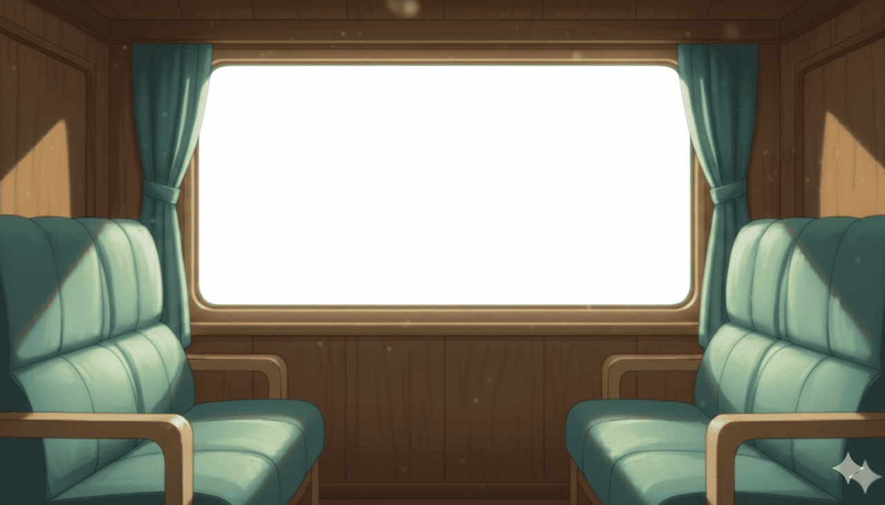
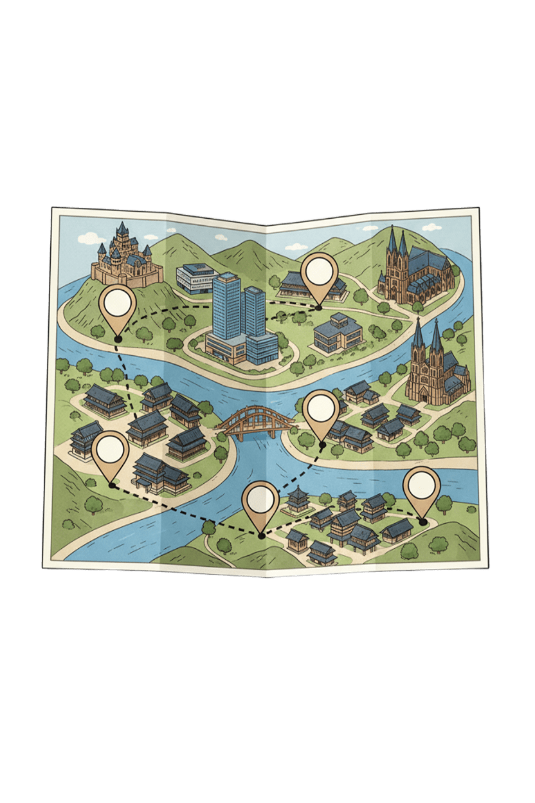

✕

😊
보내기
+
📱 실시간 톡 보기
💬 마이파-톡
🧠 가르치기
🎭 캐릭터 변경
📖 사용 설명서
🎨 배경 선택
📔 메뉴
🔑 로그인
🔊 읽어주기
🎙️ 바로바로!
꺼짐
📖 사용 설명서
✕
💬 기본 대화
🧠 가르치기
🎭 캐릭터 변경
🎮 미니 게임
📔 수첩 / 게시판
✨ 기타 기능
기능을 선택하면 자세한 설명이 여기에 나타납니다.
상태:
-
너무 혼자 두면 졸게 되어요…
📋 게시판
✕
최근 글
새로고침
글쓰기
이전 페이지
1 / 1
다음 페이지
아래에 제목을 누르면 내용을 확인할 수 있습니다.
🧠 고스트에게 가르치기
사용자가 말할 문장/단어
고스트가 대답할 말
감정 선택
자동 선택
위로
슬픔
분노
신남
기쁨
실망
절망
지침
경청
무표정/기본
저장하기
닫기

배경 선택
1) 기본 배경 (그라데이션 + 물결)
2) 눈 내리는 겨울 배경
3) 열차 배경 + 지도
4) 방송방
5) 사용자 배경 (이미지 업로드)
확인
MENU
★
고스트 수첩
원하는 메모지를 눌러 보세요.
로그인을 해야해!
출석 확인
게시판
편지
구구단
게임
덧셈
주사위
꿈틀도형
오늘의
퀘스트
AR
카메라
✕
✏️ 새 글 쓰기
등록하기
닫기